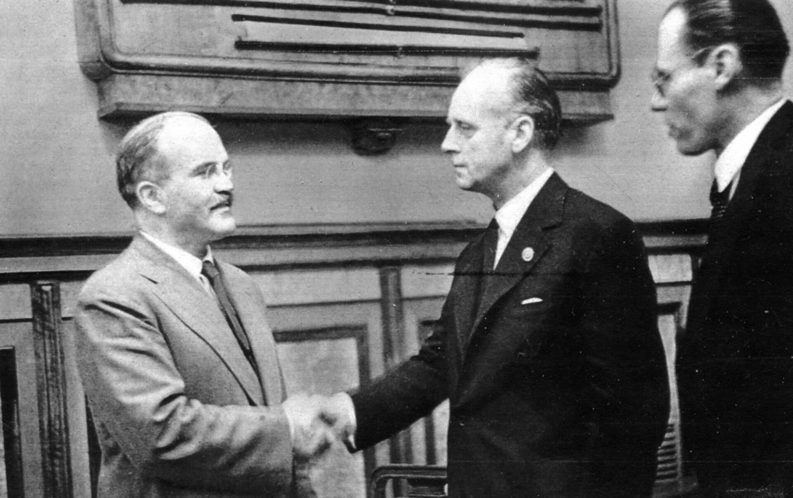
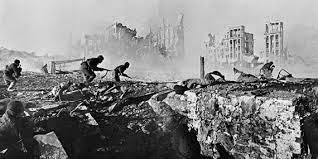

ソビエト社会主義共和国連邦
独ソ不可侵条約

スターリンの地位が揺るがないものになったころ、ドイツと「独ソ不可侵条約」を結ぶ。
これは「2国間で「お互いに領土を侵すことのないように約束する」という条約。
当時のドイツは敵国であるイギリス・フランスが、ソ連側にとっては「ノモンハン事件」で争っていた日本が近くにある状態。
争う相手がいる状態で「挟み撃ち」されるのは両国にとって良くないことで、それを避けるために条約を結んだとされる。
条約には秘密協定として「バルト3国のエストニア・ラトヴィアをソ連の勢力範囲にする」とあり、もう1つのリトアニアはドイツのポーランド侵攻後の話し合いでソ連の勢力圏に。
ポーランドは西をドイツ、東をソ連で分割。
条約を結んだ後の1939年9月1日、ポーランド領に侵攻することでイギリス、フランスはドイツに宣戦布告、「第2次世界大戦」が勃発する。
開戦後のソ連はバルト三国（エストニア、ラトヴィア、リトアニア）、1939年11月30日にはフィンランドへ侵攻して「冬戦争」が勃発。
戦争が翌年3月13日まで続いた末にフィンランドは降伏、後に締結された「モスクワ講和条約」においてフィンランド国土の約10％をソ連が獲得することに。
しかしこの行為が「侵略行為である」と非難を受けたソ連は国際連盟から追放されることになる。
ドイツとの戦争・ドイツ降伏へ

国際連盟を追放されながらフィンランドの領土を獲得したソ連でしたが、そこに攻め込んできたのは不可侵条約を結んでいた「ドイツ」だった。
第2次世界大戦中であった1941年6月22日、ドイツはソ連奇襲攻撃作戦「バルバロッサ作戦」を発動、条約を破りソ連国境に侵入して戦いの火ぶたが切られることに。
開戦後はドイツが優位に戦いを進めモスクワに迫ろうとするが、ソ連軍は応戦。
1942年6月から「スターリングラード攻防戦」が始まるとソ連軍がドイツ陸軍・第6軍を壊滅させる大勝利をおさめ、これ以降はソ連有利の展開に。
最後は1945年5月2日にドイツの首都・ベルリンを陥落させドイツを降伏させることに。
ドイツを破ったソ連は1945年8月8日に日本との「日ソ中立条約」を「ヤルタ協定」に基づいて破棄・宣戦布告。
日本の千島列島や日本の同盟国・満州国に侵攻、これが日本降伏への決定打になる。
戦勝国側になったソ連は戦後に東欧諸国への影響を強め、ドイツなどから領土の獲得、ルーマニアから獲得したベッサラビア（現在のモルドバ）の住民をシベリアなどに強制移住。
地位固めに抜かりなしというところ。
大戦後・崩壊への道
.jpg)
戦後のソ連はアメリカなどの「資本主義」陣営に対抗することになり、ここに「冷戦」関係が形成されることとなり、ソ連崩壊寸前まで続くことに。
この頃の国内では1953年にスターリンが亡くなり、スターリン時代の独裁政策を大幅緩和。
1955年に書記長就任したニキータ・フルシチョフ時代にはスターリン批判・大粛清への告発、スターリン体制からの決別表明も。
時代は変わりつつありますね。
この時代フルシチョフは農業政策に力を注ぎ成功しますが「生産第一主義」で土地、気候や伝統的農法を無視したことで1963年には大凶作に。
この結果食料を国外から輸入しなければならない事態に陥り、フルシチョフは指導者の座を追われることに。
また外交では1979年12月にアメリカと関係を結ぼうとしたことからアフガニスタンへの侵攻（1989年まで続く）を実施。
一部のイスラム諸国の反発を受け国際社会からは孤立、アメリカとの関係は悪化することに。
フルシチョフの跡を継いだブレジネフ政権では安定した代わりに改革は行われず、経済成長率も次第に鈍化して国民生活に影響。
小麦生産量で世界一を誇った農業にも陰りが見え始め、アメリカから輸入するように。
技術競争でもアメリカ・日本に遅れを取り始め、1980年代に入ると国民は体制への不満を強めることに。
これだけ崩壊してはもはや体制維持は不可能でしょう。
こうした状況打破のため1985年3月に就任したミハイル・ゴルバチョフ政権は社会主義体制の改革を掲げた「ペレストロイカ（改革）」を実施。
一党独裁体制下で腐敗した政治体制改革を推し進めることになる。